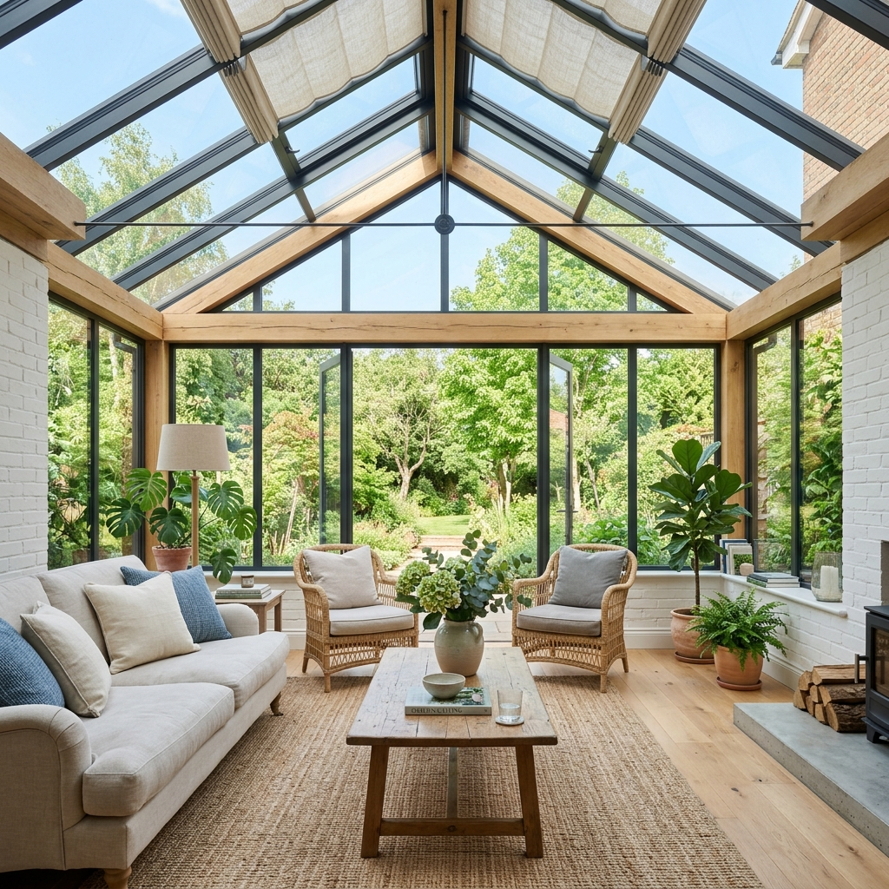
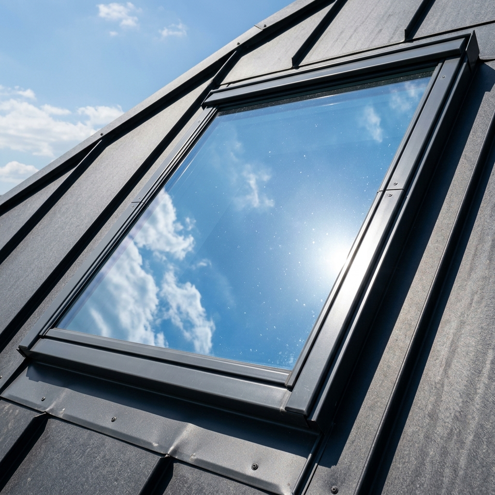
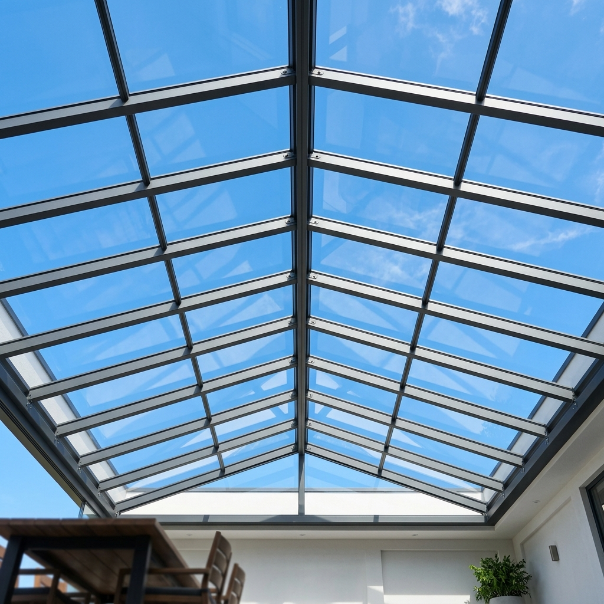
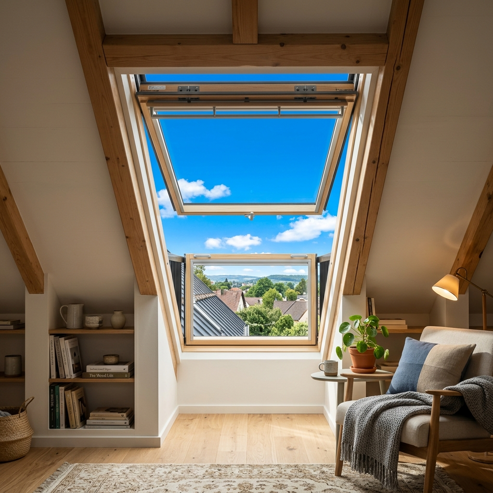
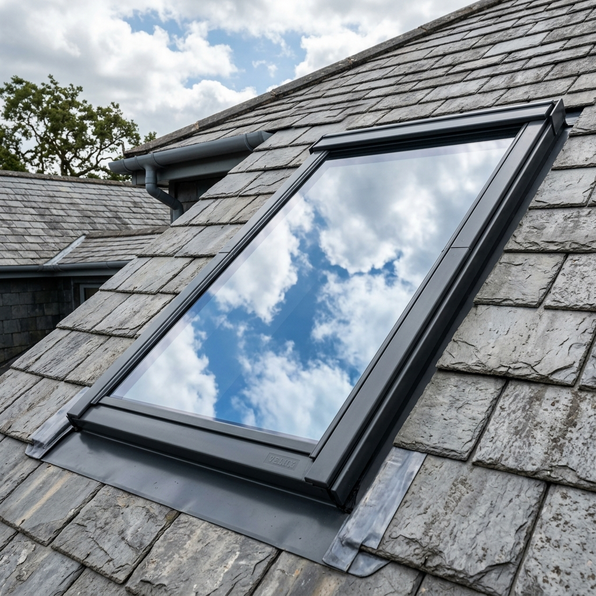
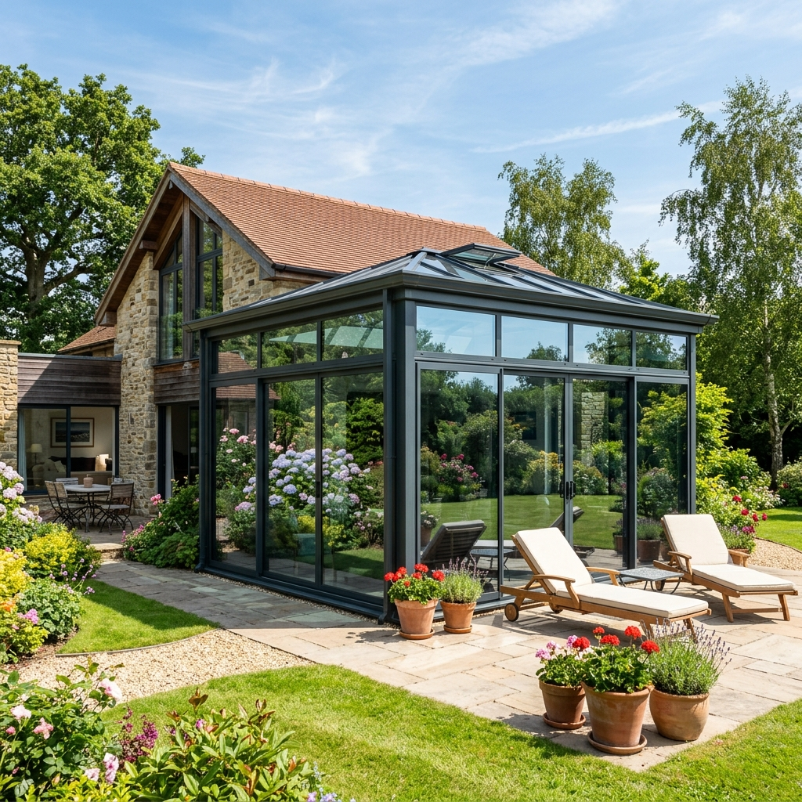

Vos combles se transforment en four dès le mois de juin ? Votre véranda est inutilisable tout l'été ? Découvrez le bouclier thermique à pose extérieure. La seule solution efficace à 100% pour retrouver des pièces à vivre fraîches, sans vous ruiner en climatisation.
Le problème
C'est la frustration numéro 1 de tous les propriétaires de fenêtres de toit (Velux) et de vérandas. Vous avez investi dans des stores intérieurs occultants, vous fermez tout dès le matin, mais en fin de journée, la pièce reste étouffante (souvent plus de 35°C au thermomètre).
L'explication physique est simple : une fois que les rayons du soleil ont traversé le vitrage, la chaleur est déjà coincée à l'intérieur. Votre store intérieur la bloque visuellement, mais la chaleur s'accumule entre la vitre et le tissu. Résultat ? La vitre brûle et chauffe toute la pièce comme un radiateur géant.
Impossible de trouver le sommeil ou de télétravailler sous les toits sans transpirer à grosses gouttes.
Cette magnifique pièce de vie (qui vous a coûté cher) devient une zone interdite de juin à septembre.
Les UV constants détruisent et décolorent vos parquets, canapés et meubles exposés.
L'alternative écologique
Face à la chaleur, le premier réflexe est souvent d'installer une climatisation réversible. Mais sur des toitures très vitrées, c'est comme essayer de refroidir une pièce en laissant les fenêtres ouvertes.
Votre climatiseur va tourner à plein régime toute la journée pour compenser l'apport solaire continu. L'installation d'un film solaire agit comme une isolation passive : il traite le problème à la source, vous permettant soit de vous passer de climatisation, soit de réduire de 30 à 40% son temps d'allumage. Un investissement qui s'autofinance très rapidement.
Ne laissez plus la chaleur vous dicter où vivre dans votre maison. Estimez le coût de votre installation (pose pro incluse) en quelques clics.
La solution technique
Pour vaincre définitivement l'effet de serre des toitures vitrées, la seule solution validée par les experts thermiques est l'application d'un film solaire anti-chaleur en pose extérieure.
Repousse jusqu'à 85% de la chaleur solaire directement vers l'extérieur (dans l'atmosphère).
Une réduction ressentie de 5 à 8°C dans la pièce, dès les premières heures suivant l'installation.
Un bouclier absolu contre le vieillissement prématuré et le ternissement de vos intérieurs.
Nos films stoppent les infrarouges (la chaleur) mais laissent passer une belle lumière naturelle sans éblouissement.

Spécificité Véranda
Les toitures de vérandas ne sont pas toutes les mêmes, et on ne pose pas le même produit sur du verre que sur du plastique. C'est là qu'intervient notre expertise :
Simple, double vitrage, argon : Nous utilisons des films multicouches métallisés haute performance qui fusionnent avec le vitrage pour une durabilité maximale.
Le plastique alvéolaire se dilate fortement avec la chaleur (il "respire"). Poser un film classique le ferait cloquer en quelques semaines. Nous appliquons des films solaires spécifiques ultra-extensibles conçus pour suivre les mouvements de votre toiture.

Beaucoup de bricoleurs tentent de poser des adhésifs d'entrée de gamme à l'intérieur de leurs fenêtres de toit pour éviter de monter sur le toit. C'est une erreur aux conséquences graves.
Sur des doubles vitrages modernes, poser un film inadapté à l'intérieur fait surchauffer le gaz contenu dans le verre. La pression monte, entraînant un risque majeur d'explosion de la vitre. L'intervention de nos techniciens vous sécurise à 100% :
Nous analysons vos vitrages pour sélectionner le film extérieur adéquat, garanti sans risque thermique.
Intervenir sur une toiture exige un matériel de sécurité adapté (harnais, échelles spécifiques) et des normes strictes.
Sur 100% de nos poses extérieures, nous coulons un joint silicone neutre. L'eau et le gel ne s'infiltreront jamais.
Nos Réalisations
Découvrez le rendu visuel de nos poses de films solaires haute performance. Une intégration parfaite qui respecte l'esthétique de votre maison, vous protège des regards extérieurs (effet miroir sans tain le jour) et bloque la chaleur de manière radicale.

Le film filtre la chaleur et l'éblouissement tout en conservant une transparence parfaite sur l'extérieur. Vos combles et votre espace nuit redeviennent vivables.

En pose extérieure, le film offre un élégant aspect réfléchissant (effet miroir) qui rejette les UV et l'énergie solaire avant même qu'ils ne touchent le vitrage.

Application sur les façades vitrées et la toiture de véranda. Le rendu est ultra-moderne et l'effet de serre qui transformait la pièce en four est totalement stoppé.
Contact
Nos plannings d'intervention se remplissent extrêmement vite dès les premières chaleurs du printemps. Anticipez votre confort et contactez-nous dès aujourd'hui.